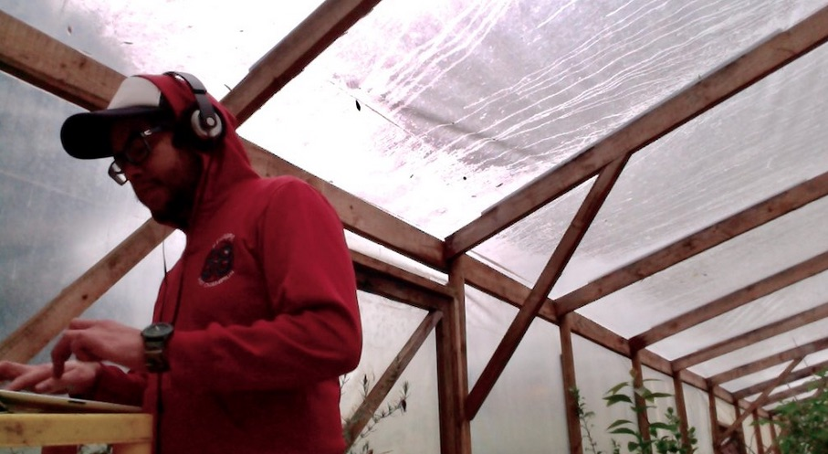

dolls can talk...
Andrew Kaamo

Hi there, I’m glad you're here. My name is Andrew Kaamo and I am the person behind the Mega Doll Sound System Experiment.
i don't believe i have a problem for socializing correctly with people i just can't find myself and that's an issue i will not be able to fix in my life, so fuck off, my music on the other hand is all about finding my family, so there's this obvious contradiction about who i am and where the inspiration for all this music comes from. well, i guess its hard to explain but i can try my best. I studied musical composition for so many years and then contacted the professors personally to continue growing my knowledge on what i call 'drawing sound techniques' so that i can keep drawing songs in my mind, at the time mega doll didn't existed, im talking about year 2009 up to year 2015, and the music i had in my mind at the time was always classical music, because i enjoyt it so much. i had written a few breakcore songs like my first official mega doll song, it was under the alias, phantoma El Habitat37, which was about me feeling my heart explode inside out and seen how after the explosion a flower was born, my heart became a delicate flower, it was my first conceptual experiment ever. eventually music is not about conceptual mixtures of events, music is often associated with politics (which i hate, i hate all politicians) or with common daily life things, but i wanted to try something that didn't required my face to be heard, all musicians need to seel their face for their music to be heard, i feel the need of the opposite because once you offer a musician profile with your face as the main brand you become and obstacle for the music to flow, very rarely people present themselves with an avatar that's something else other than human identity, that's why very rarely you find my voice in my music, electronic music is not about the human voice, is about digital revelations of complex concepts of virtualizations and holograms, so i tried my first one and it ended up being an explosion what a weird way to start, like a scientist in a laboratory blows everything the first attempt. I stopped writing songs and kept mastering techniques and different ways o experimentation, and when i finally finished the first 10 songs album The Cotton Candy Machine in 2019 i started listening to dolls voices in my head while asleep, while walking around the forest it started to become a kind of nightmare and one day i decided to sit down and conversate with this voices, or spirits or whatever they are and listen, so there are many dolls in my head, they all talk about different things and i try to draw into sound what they sing and say, i started writing a diary of all this conversations it's giant, through the journey i have drawn millions of doll voices, including my mother and my family, and ever since i found my mother's voice flowing through the silence of my songs (accidentally or intentionally, i will never know), my family started growing, and i want to thank everyone for showing so much support and caring about me because i have a mental decease that destroys everything that lives in my imagination and replaces it with silence and i hate because i tend to forget about people who are around me... it's fucked up and it's not gonna change, but they are always there to show support and explain the story to me a thousand times
thank you Kaamo Family